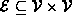
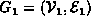
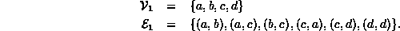
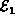

Data Structures and Algorithms
with Object-Oriented Design Patterns in C++
Data Structures and Algorithms
with Object-Oriented Design Patterns in C++We begin with the definition of a directed graph:
Definition (Directed Graph) A directed graph , or digraph , is an ordered pairwith the following properties:
- The first component,
, is a finite, non-empty set. The elements of
- The second component,
, is a finite set of ordered pairs of vertices. I.e., . The elements of
For example, consider the directed graph  comprised of four vertices and six edges:

The graph G can be represented
graphically as shown in Figure  .
The vertices are represented by appropriately labeled circles,
and the edges are represented by arrows
that connect associated vertices.
.
The vertices are represented by appropriately labeled circles,
and the edges are represented by arrows
that connect associated vertices.
Notice that because the pairs that represent edges are ordered, the two edges (a,c) and (c,a) are distinct. Furthermore, since  is a mathematical set, it cannot contain more than one instance of a given edge. And finally, an edge such as (d,d) may connect a node to itself.
 Copyright © 1997 by Bruno R. Preiss, P.Eng. All rights reserved.
Copyright © 1997 by Bruno R. Preiss, P.Eng. All rights reserved.